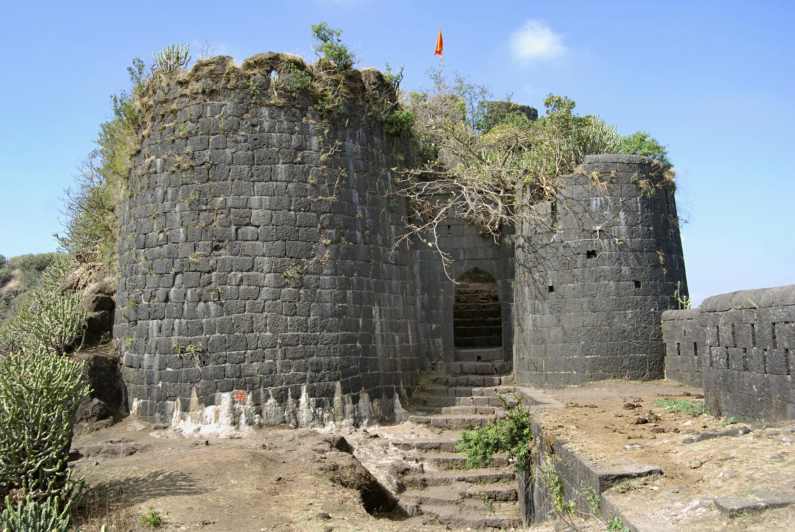
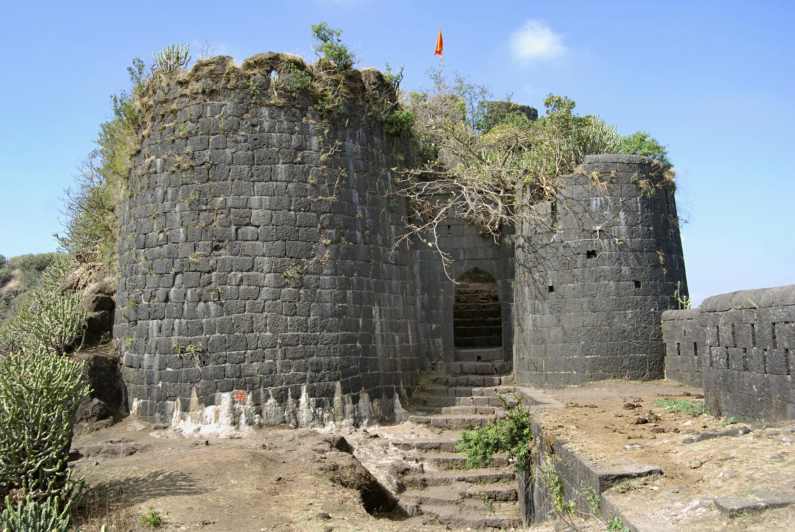
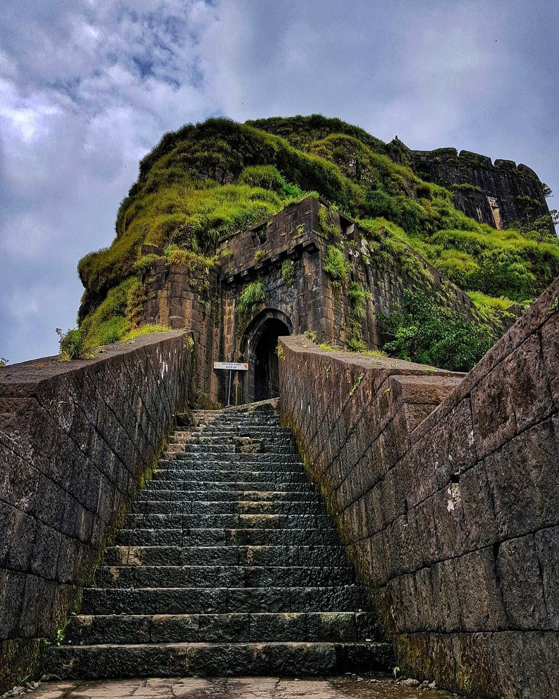
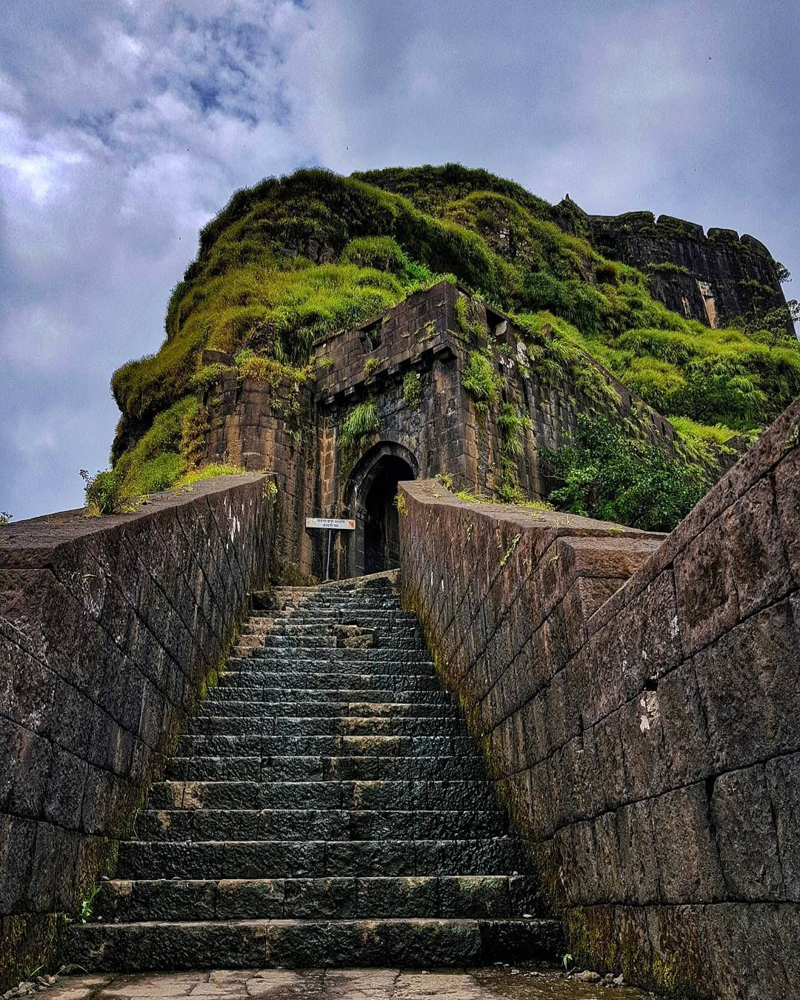

"Astē Kadam" (Step in, my Lord...): A humble invitation, welcoming the revered figure to enter.
"Maharaj" (My Lord...): An address of respect and reverence towards the esteemed ruler.
"Gadpati... Gajashwapati..." (Lord of Forts... Lord of Elephants...): Titles indicating command over forts and elephants, symbolizing authority and might.
"Bhupati... Prajapati..." (Lord of Land... Lord of the People...): Signifying rulership over the land and its inhabitants, depicting leadership and care.
"Varnaratnashripati... Ashtavadhanjagrit..." (Adorned with precious jewels... Alert and observant...): Highlights adornment with jewels and an alert, vigilant nature.
"Ashtapradhanveshtit... Nyayalankaramandit..." (Surrounded by eight ministers... Adorned with justice...): Suggests the presence of a council of eight ministers and a strong adherence to justice.
"Strashastraparangat... Rajnitidhurandhar..." (Skilled in the art of governance... Expert in the science of politics...): Demonstrates skill in governance and expertise in political science.
"Proudhpratappurandar... Kshatriyakulavans..." (Symbol of great valor and strength... Pride of the warrior lineage...): Emphasizes exceptional courage and strength, proud lineage of warriors.
"Sinhasanadhishvar... Maharajadhiraj..." (Lord of the throne... King of kings...): Titles signifying the ruler's authority and preeminence over all.
"Rajar Shiv Chhatrapati Maharajacha Vijay Aso." (May the victory be of King Shiv Chhatrapati Maharaj.): A heartfelt wish for the triumph and success of King Shiv Chhatrapati Maharaj.
"अस्ते कदम" : एक विनम्र आमंत्रण, प्रवेशासाठी आदरणीय व्यक्तीचे स्वागत.
"महाराज" : आदरणीय राज्यकर्त्यांबद्दल आदर आणि आदराचे संबोधन.
"गडपती... गजस्वपती..." (किल्ल्यांचा स्वामी... हत्तींचा देव...): आज्ञा दर्शवणारी शीर्षके अधिकार आणि पराक्रमाचे प्रतीक असलेले किल्ले आणि हत्ती.
"भूपती... प्रजापती..." (भूमीचा स्वामी... लोकांचा स्वामी...): राज्यावर अधिराज्य गाजवणारे नेतृत्व आणि काळजी दर्शवणारी जमीन आणि तेथील रहिवासी.
"वर्णरत्नश्रीपती... अष्टवधंजगृत..." (मौल्यवान दागिन्यांनी सजलेले... सावधान आणि लक्षवेधक...): दागिन्यांसह अलंकार आणि सतर्क, जागृत स्वभाव.
"अष्टप्रधानवेष्टित... न्यायलंकारमंडित..." (आठ मंत्र्यांनी वेढलेले... सुशोभित केलेले न्याय...): आठ मंत्र्यांच्या परिषदेची उपस्थिती आणि त्याचे कठोर पालन सुचवते न्याय.
"शास्त्रपरंगत...रजनीतिधुरंधर..." (शासनाच्या कलेत निपुण... तज्ज्ञ राजकारणाचे शास्त्र...): शासनातील कौशल्य आणि राज्यशास्त्रातील कौशल्य दाखवते.
"गर्वप्रतापपुरंदर... क्षत्रियकुलावंस..." (महान शौर्याचे आणि सामर्थ्याचे प्रतीक... प्राइड ऑफ द योद्धा वंश...): असाधारण धैर्य आणि सामर्थ्य यावर जोर देते, योद्धांचा अभिमान वंश.
"सिंहासनाधीश्वर... महाराजाधिराज..." (सिंहासनाचा स्वामी... राजांचा राजा...): शीर्षके शासकाचा अधिकार आणि सर्वांवर श्रेष्ठता.
"राजर शिवछत्रपती महाराजांचा विजय असो." (राजा शिवछत्रपतींचा विजय असो महाराज.): राजा शिवछत्रपती महाराजांच्या विजयासाठी आणि यशासाठी मनःपूर्वक शुभेच्छा.


 

 
